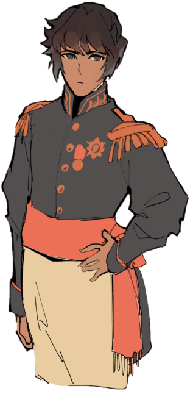

Hello, I'm Devon. You might also know me by my username batteryrose. I suck at describing myself, so if you know me I'm sure you already have your own impression of me... and if you don't, then I would prefer it that way.
I like to draw, that's about the only skill I'm confident of in this life. I also write sometimes. I'm probably known for my fandom fanarts, especially around the 'otome games' sphere. I built my following in the Cybird Ikemen Series fandom, particularly as Ikemen Vampire's Napoleon content factory. Met most of my internet friends there, good times.
Anyway, I'm studying information technology, so I know a thing or two about making websites. Somehow despite absolutely despising it I also Love using pure HTML/CSS. There's a kind of organized chaos being made in coding a website from scratch. I thrive in organized chaos.
Social media companies have been unreliable lately. I'd love it if personal websites are making a comeback. So, I'm joining in the movement. I'll be glad to assist others in joining in the movement too.
That's enough about me. Wait, no, there's a little more.
|
 |
Devonares he/him | 20^ | Libra | INFP where to find me? Tumblr: batteryrose(purged a lot of my |
this page is under construction.